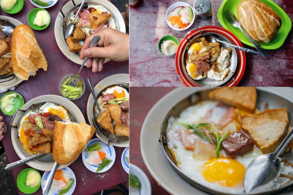
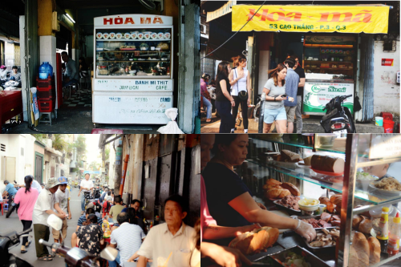

Mở ra từ tận năm 1958, bánh mì Hòa Mã là một trong những tiệm bánh mì lâu đời nhất ở Sài Gòn. Theo thời gian, quán có đôi phần thay đổi, duy chỉ có vị bánh mì là giữ nguyên bản suốt hơn nửa thế kỉ. Do đó, rất nhiều người ghé quán không chỉ để thưởng thức món bánh mì chảo trứ danh, mà hơn thế là muốn tìm chút hương vị của Sài Gòn xưa còn hoài trong ký ức.
Tiệm phục vụ 2 món “bánh mì ốp-la đủ thứ” với các nguyên liệu được chiên trong chảo và “bánh mì kẹp thịt” với nhân là các loại thịt nguội. Thức uống cũng đơn giản không kém, chỉ có cà phê đá, cà phê sữa và nước suối, trà... Chảo thức ăn nóng hổi gồm trứng ốp la béo ngậy, pate tự làm thơm nức, thịt nguội, xúc xích, chả lụa hòa quyện cùng nước tương, tương ớt và đồ chua gừng giòn sần hoà quyện tạo ra hương vị cuốn hút và đặc biệt khó quên. Mức giá dao động từ 50.000 – 75.000 VNĐ mỗi suất, giá cả hợp lí phù hợp với nhiều người.

Không gian quán đơn giản, có thể ngồi ngoài trời hoặc vào trong không gian không quá rộng nên khách chủ yếu mua mang đi

Phục vụ nhiệt tình, chủ quán thân thiện biết lắng nghe khách hàng tuy nhiên do không gian nhỏ nên không thể ngồi lại ăn nếu lưu lượng khách quá đông Đây là quán ăn gắn bó với biết bao nhiêu thế hệ người trẻ và người dân Sài Gòn. Bạn có thể thử nó khi nào bạn muốn có thể liên hệ ngay với số điện thoại hoặc đến trực tiếp quán.Chúc bạn có trải nghiệm tốt nhé!
Thời gian mở cửa: 6:00-11:00 hằng ngày
SĐT: 090 304 2089
Địa chỉ: 54 Cao Thắng, Phường 3, Quận 3, TPHCM
Về đầu trang{kind=link}
{kind=link}